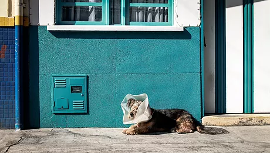
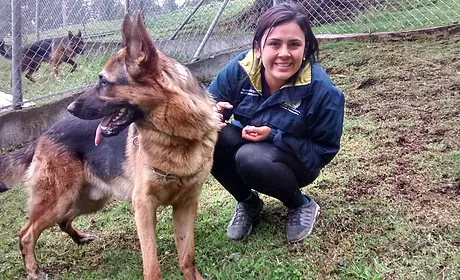
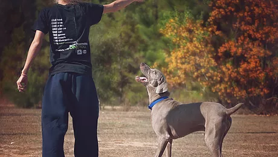

chattanmlshelterhotmail.com
(334)-756-9377
CHATTAHOOCHEE HUMANE SOCIETY

EXPERIENCE CHATTAHOOCHEE HUMANE SOCIETY
About Us
We are an open admission animal shelter for Chambers County, Al.,and have been finding homes for animals since 1984. We host fund raisers and adoption events throughout the year to finance our programs that include T/N/R, spay/neuter assistance, fostering, and education.

Chattahoochee Humane Society at a Glance
Here at Chattahoochee Humane Society, we are driven by a single goal; to do our part in making the world a better place for all. Our decision making process is informed by comprehensive empirical studies and high quality data evaluation. We strive to build productive relationships and make a positive impact with all of our pursuits.
-


